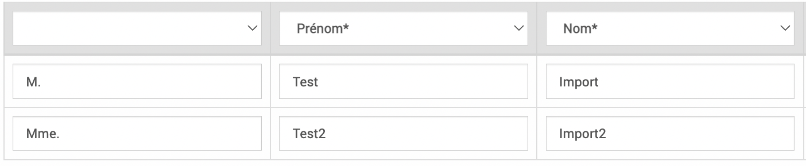
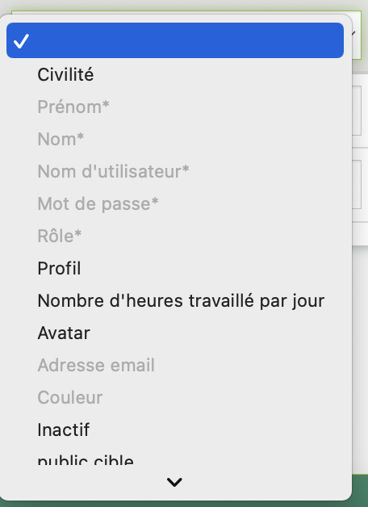
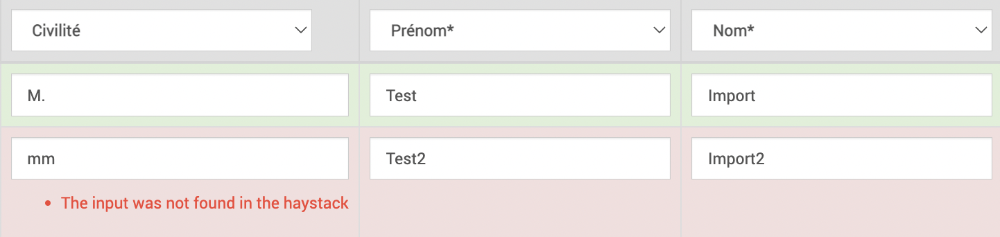
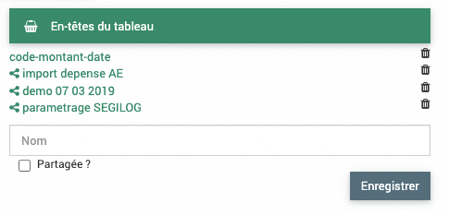
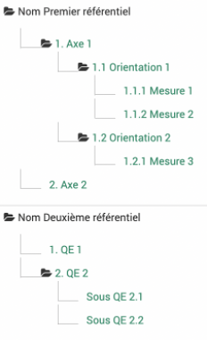
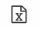
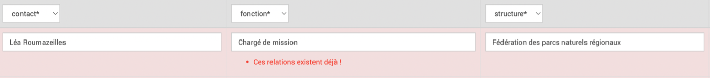

Imports
Si vous avez une large base de données à ajouter, il est utile de recourir aux imports qui permettent d’insérer plusieurs entrées d’un coup grâce à un format tableur.
Procédure générale
La précédure pour les imports est similaire dans la majorité des cas (exeption des imports budgets, territoires et mots clés et référentiels) et suit la logique suivante :
Créer un fichier tableur avec l’outil de tableur privilégié (Excel, Numbers, Google Sheet, Calc…) et remplir les données avec les en-têtes de colonnes correspondantes
Sauvegarder au format csv
Importer dans EVA
Quelles colonnes pour chaque import ?
Des exemples de fichiers Excel et csv sont disponibles ici
L’ordre des colonnes n’a pas d’importance, certaines cases peuvent être vides si elles ne sont pas dans les colonnes de champs obligatoires.
Dans certaines colonnes, on peut indiquer un texte librement, pour d’autres seulement certains mots sont acceptés (indiqué en gras dans les tableaux ci-dessous) ou seulement des chiffres, les majuscules/minuscules sont importantes.
Les mots clés et référentiels peuvent s’ajouter dans des colonnes supplémentaires s’ils ont été paramétrés précédemment.
Import utilisateurs
Colonnes obligatoires : Prénom, Nom, Nom d’utilisateur, Rôle, Mot de passe, Adresse email
Autres colonnes possibles : Civilité, Couleur
+ les mots clés
Nom* |
Prénom* |
Nom d’utilisateur* |
Rôle |
Mot de passe |
Civilités |
Adresse email* |
Couleur |
|---|---|---|---|---|---|---|---|
Texte libre |
Texte libre |
Texte libre |
Nom du rôle prédéfini dans le module admin |
Texte libre |
Mr. ou Non binaire ou Mme. |
Texte format |
Code hex example : #fcba03 |
Note
La couleur est utile pour l’affichage de l’agenda par exemple.
Import indicateurs
Colonnes obligatoires : Nom, Type, Opérateur de synthèse annuelle
Autres colonnes possibles : Archivé (oui ou non), Description, Définition, Méthode, Interprétation, Unité de mesure
+ les mots clés
Avertissement
Ne pas indiquer la colonne « Valeurs » (provoque un bug).
Nom* |
Type* |
Opérateur de synthèse annuelle* |
Archivé |
Description |
Unité de mesure |
|---|---|---|---|---|---|
Texte libre |
Libre Liste |
Somme Moyenne Médiane Maximum Minimum |
Oui Non (défaut non) |
Texte libre |
Texte libre |
Import contacts
Colonnes obligatoires : Prénom, Nom
Autres colonnes possibles : Adresse email, Téléphone, Portable, Adresse, ligne 1, Adresse, ligne 2, Code postal, Ville, Pays
+ les mots clés et groupe de champs additionnels
Avertissement
Bien choisir le « Nom » avec astérisque dans l’interface EVA pour la colonne Nom* et ne pas choisir « Nom-Prénom ».
Civilité |
Prénom* |
Nom* |
Adresse |
Téléphone |
Adresse ligne 1 |
Code postal |
|---|---|---|---|---|---|---|
M. ou Mme. ou Non binaire |
Texte libre |
Texte libre |
Texte libre |
Texte libre |
Texte libre |
Texte libre |
Import structures
Colonnes obligatoires : Nom
Autres colonnes possibles : Adresse email, Sigle, Numéro de téléphone, SIRET, Site web, « Adresse, ligne 1 », « Adresse, ligne 2 », Code postal, Ville, Pays
+ les mots clés
Avertissement
Ne pas indiquer la colonne « Téléphone secondaire », elle ne fonctionne pas.
Nom* |
Adresse |
Sigle |
SIRET |
Numéro de téléphone |
Adresse ligne 1 |
Code postal |
|---|---|---|---|---|---|---|
Texte libre |
Texte libre |
Texte libre |
Texte libre |
Texte libre |
Texte libre |
Texte libre |
Import temps
Colonnes obligatoires : Utilisateur, Début, Fin, Heures, Type, Fiche
Autres colonnes possibles : Titre, Description, Territoire
+ les mots clés
Avertissement
La fiche n’est pas indiquée comme obligatoire mais elle l’est dans le formulaire par la suite.
Tout comme le type d’absence s’il est paramétré dans votre EVA (le champ ne marche pas du tout à l’import).
Si les heures de début et de fin ne sont pas insérées, EVA prendra l’heure à laquelle l’import est effectué.
Si le nombre d’heure n’est pas indiqué, EVA indiquera 0h par défaut
Note
Le nombre d’heures peut être différent de la différence entre début et fin (moins élevé comme plus élevé)
Titre |
Utilisateur* |
Fiche* |
Début* |
Fin* |
Heures* |
Type* |
|---|---|---|---|---|---|---|
Texte libre |
Prénom Nom |
Code ou titre |
Date au format JJ/MM/AAAA HH:MM |
Date au format JJ/MM/AAAA HH:MM |
Chiffre |
Temps passé Temps d’absence Temps prévu |
Import fiches
Colonnes obligatoires : Titre
Autres colonnes possibles (en fonction des paramètres) : Statut, Code analytique, Chef(s) de projet, Validateur(s), Membres de l’équipe (+ rôle si paramétré), Acteurs (+ rôle si paramétré), Rattachement arboresence initiale (fiche qui doit déjà exister), Objectifs, Etat d’avancement du projet, Contexte et motif, Activité et livrables (en fonction du paramétrage des blocs dans les fiches), Maîtrise d’ouvrage externe, Accessible au réseau, Modèle de fiche (le nombre présent dans l’URL lorsque l’on consulte ce modèle), Statut financier (ID), Date de programmation, Date de démarrage prévue, Date de fin prévue, Date de démarrage effective, Date de fin effective, Territoires
+ les mots clés
Avertissement
Le niveau sera déduit en fonction du rattachement à l’arborescence initiale. Ne pas indiquer la colonne « équipe », elle ne se remplit pas avec les membres de l’équipe.
Statut |
Code Analytique |
Titre* |
Chef(s) de projet |
Rattachement arborescence |
Objectifs |
|---|---|---|---|---|---|
Brouillon A valider Validée Votée Refusée Archivée |
Texte libre |
Texte libre |
Nom de l’utilisateur -- Autre nom |
Nom exact d’une fiche qui doit déjà exister |
Texte libre |
Maîtrise d’ouvrage externe |
Accessible au réseau |
Modèle de fiche |
Date de programmation |
Territoires |
|---|---|---|---|---|
Oui Non (défaut non) |
Oui Non (défaut non) |
Nombre présent dans URL (ID) |
Date au format JJ/MM/AAAA |
Nom exact du territoire dans EVA |
Note
Exemple URL du modèle de fiche : dans « Administration » puis « Modèles de fiches », cliquer sur le modèle souhaité, l’URL qui s’affiche ressemble à celui-ci « parc.evaparc.net/project/template/form/20 », dans ce cas indiquer « 20 » dans la case modèle de fiche. On peut maintenant aussi obtenir les ID dans une colonne dédiée.
La fonctionnalité d’importer les membres de l’équipe et les acteurs est nouvelle. Voici comment procéder :
Ils peuvent être ajoutés avec leur rôle. Deux séparateurs sont donc nécessaires : la virgule et les tirets. La virgule permet de séparer le nom du rôle et les tirets de séparer deux entités différentes. Une erreur apparaitra si les noms, prénoms et rôles ne correspondent pas aux données dans EVA.
Le « rôle » est ici défini dans les mots clés : mot clé rattaché à « Membre » et mot clé rattaché à « Acteur ». Il est recommandé de rattacher un seul mot clé à membre. Si aucun rôle n’est spécifié, le rôle « membre » sera associé aux membres de l’équipe par défaut et aucun rôle ne sera associé aux acteurs.
Note
Les variables Chefs de projet ou Validateur qui sont nommées par défaut dans le logiciel ont pu être renommées pour le parc en Pilote par exemple pour Chef de projet. Dans ce cas, l’import permet maintenant d’indiquer le nouveau terme (depuis février 2023).
Ces colonnes doivent être formatées comme ceci :
Code Analytique |
Titre* |
Membres de l’équipe |
Acteurs |
|---|---|---|---|
Texte libre |
Texte libre |
Nom et prénom d’un utilisateur, rôle -- Nom et prénom d’un utilisateur, rôle |
Nom d’un acteur, rôle -- Nom d’un acteur, rôle |
Par exemple le fichier csv peut ressembler à celui-ci :
Code analytique;Titre;Chef(s) de projet;Validateur(s);Membres de l’Équipe;ActeursIMPTESTACTMEMB;Test import fiches acteurs membres;Lea Roumazeilles;Lea Roumazeilles – Anne Levacher;Marie Berlon,Coordination – Louis BALDON,Assistance Technique – Antoine Mellager – Isabelle Dadon; Communes,Financeur – Conseil départemental,Appui Technique – FPNRF
- Dans cet exemple, on importe une fiche « Test import fiches acteurs membres » avec comme membre de l’équipe :
Chef(s) de projet : Léa Roumazeilles
Validateur(s) : Léa Roumazeilles et Anne Levacher
Membres de l’équipe : Marie Berlon (rôle de coordination), Louis Baldon (rôle d’assistance technique), Antoine Mellager (rôle de membre par défaut), Isabelle Dadon (rôle de membre par défaut)
Acteurs : Communes (rôle de financeur), Conseil départemental (rôle d’appui technique), FPNRF (pas de rôle attitré)
Les rôles « coordination » et « assistance technique » sont des mots clés associés à membres, les rôles « financeur » et « appui technique » sont des mots clés associés à acteurs. (Attention le rôle financeur ici est différent de la case à cocher financeur dans les acteurs)
Import convention
Colonnes obligatoires : Nom
Autres colonnes possibles : Contractant, Accessible réseau, Description, N°, N° arrêté, Début, Fin, Avancement, Date de décision, Date de notification, Montant, Montant subventionnable, Membres, ID Fiches, Type de convention, Territoire
+ les mots clés
Nom* |
Contractant |
Description |
Début |
Fin |
Montant |
ID Fiches |
|---|---|---|---|---|---|---|
Texte libre |
Nom ou ID |
Texte libre |
Date au format JJ/MM/AAAA HH:MM |
Date au format JJ/MM/AAAA HH:MM |
Chiffre |
ID1 – ID2 |
Note
Les fiches rattachées en import seront affectées automatiquement à 100% à la convention. Pour rattacher plusieurs fiches, il faut indiquer dans la colonne ID Fiches ID1 – ID2 (deux ID séparés par deux tirets et un espace de chaque côté des tirets).
Sauvegarder au format csv
Enregistrer le tableau au format csv avec des séparateurs en points-virgules. Le format CSV UTF-8 est à privilégier.
Vous pouvez vérifier le format en ouvrant le fichier csv avec un éditeur de texte simple (ex : TextEdit, WordPad, NotePad…).
Les colonnes doivent être séparées par des points-virgules, les lignes par des retours à la ligne.
Ex :
Statut;Code analytique;Titre
Brouillon;001;Fiche numéro 1
Importer dans EVA
Dans EVA, cliquer sur le bouton rouge dans le coin inférieur droit pour importer les csv  .
.
Choisir le fichier csv préparé précédemment, le délimiteur point-virgule, et cocher « La première ligne contient les en-têtes des colonnes ? » puis cliquer sur « Envoyer ».
{kind=link}
Les données devraient apparaître, chaque ligne correspondant à chaque élément.
{kind=link}
Vérifier les en-têtes des colonnes, certains auront déjà été trouvés, d’autres non, il faudra les indiquer grâce au menu déroulant.
{kind=link}
Dans les suggestions d’en-tête du menu déroulant, on peut vérifier quels mots clés et référentiels peuvent être associés. Cliquer sur « Vérifier ou Valider ».
Si votre tableau est correct il sera surligné en vert, les lignes incorrects seront rouges.
{kind=link}
(Ici par exemple il faut indiquer « Mme. » au lieu de « mm » dans la colonne civilité pour corriger la ligne)
Vous pouvez les corriger ou si vous ne souhaitez pas importer ces lignes cliquer sur « Importer ». Seules les lignes qui étaient surlignées en vert seront importées dans EVA.
Une bonne pratique est de vérifier si l’import a bien eu lieu correctement.
Procédure budget
La précédure pour les imports budget suit la logique suivante :
Créer un fichier tableur avec l’outil de tableur privilégié (Excel, Numbers, Google Sheet, Calc…) et remplir les données avec les en-têtes de colonnes correspondantes
Sauvegarder au format csv
Importer dans EVA
Des exemples de fichiers Excel et csv sont disponibles ici
L’ordre des colonnes n’a pas d’importance, certaines cases peuvent être vides si elles ne sont pas dans les colonnes de champs obligatoires.
Dans certaines colonnes, on peut indiquer un texte librement, pour d’autres seulement certains mots sont acceptés (indiqué en gras dans les tableaux ci-dessous) ou seulement des chiffres, les majuscules/minuscules sont importantes.
Les montants doivent être au format numérique sans espace
Import budget en général
Il faut préparer des fichiers csv séparés pour les recettes et dépenses et pour chaque type, par exemple prévu, engagé, payé. Il faut avoir défini au préalable les comptes auxquels rattacher les recettes et dépenses, qui peuvent eux aussi être importés. Les enveloppes peuvent elles aussi être importées.
Import Comptes
Colonnes obligatoires : Code, Nom, Type de mouvement
Autres colonnes possibles : Description, Parent
Note
S’il y a une arborescence dans les comptes, il faudra d’abord importer tous les comptes parents, puis tous le niveau d’arborescence suivant et ainsi de suite pour pouvoir les rattacher.
Avertissement
Attention pour le parent à bien donner un compte parent recette si le type de mouvement est recette et un compte parent dépense si le type de mouvement est dépense. Le logiciel ne peut pas le vérifier au moment de l’import mais cela produit des bugs plus tard.
Code* |
Nom* |
Type de Mouvement* |
Description |
Parent |
|---|---|---|---|---|
Texte libre |
Texte libre |
Recette Dépense |
Texte libre |
ID du parent |
Import Enveloppes
Colonnes obligatoires : Nom, Financeur Autres colonnes possibles : Code, Début, Fin, Montant
Note
Les financeurs sont ajoutés via le module structure.
Code |
Nom* |
Financeur* |
Début |
Fin |
Montant |
|---|---|---|---|---|---|
Texte libre |
Texte libre |
ID Financeur |
Date format JJ/MM/AAAA |
Date format JJ/MM/AAAA |
Format numérique sans espace |
Import Recettes
Colonnes obligatoires : Code analytique, Compte, Date, Montant Autres colonnes possibles : Nom, Montant HT, Tiers, Exercice, Bordereau du mandatement, Mandat, Engagement, Compléments, Évolution, Unité de gestion, Série, Convention (numéro de la convention)
Code Analytique* |
Compte* |
Date* |
Montant* |
Nom |
Montant HT |
|
|---|---|---|---|---|---|---|
Code de la fiche |
Code du compte |
Date format JJ/MM/AAAA |
Format numérique sans espace |
Texte libre |
Format numérique sans espace |
|
Import Dépenses
Colonnes obligatoires : Code analytique, Compte, Date, Montant Autres colonnes possibles : Nom, Montant HT, Tiers, Exercice, Bordereau du mandatement, Mandat, Engagement, Compléments, Évolution, Unité de gestion, Date facture.
Code Analytique* |
Compte* |
Date* |
Montant* |
Nom |
Montant HT |
|
|---|---|---|---|---|---|---|
Code de la fiche |
Code du compte |
Date format JJ/MM/AAAA |
Format numérique sans espace |
Texte libre |
Format numérique sans espace |
|
Import Budget dans EVA
La procédure d’import dans EVA est similaire à celle décrite dans la procédure générale, certains aspects sont légèrement différents.
Dans EVA cliquer sur « Budget » puis « Import financier ».
Choisir le type de mouvement : recette ou dépense.
Import Recettes
Choisir le type de recette (sollicité, notifié, attribué ou perçu) et le type d’import (ajout, écrasement total, écrasement des fiches concernées).
Note
Pour les écrasements, il faudra préciser l’année ou « toutes les années ».
{kind=link}
Import Dépenses
Choisir le type de dépense (prévu, engagé, payé, libéré, engagé payé, AE ouvert, AE prévu, AE engagé, CP prévu, CP ouvert, CP mandaté) et le type d’import (ajout, écrasement total, écrasement des fiches concernées).
Note
Pour les écrasements, il faudra préciser l’année ou « toutes les années ». L’écrasement n’écrase que les écritures précédemment importées, si un agent a fait des saisies manuelles, elles ne seront pas supprimées par l’import. Si une donnée importée a été modifiée, elle ne sera pas supprimée non plus.
Avertissement
ATTENTION : l’écrasement total écrasera toutes les données importées précédemment même sur d’autres fiches.

Dans les deux cas
Choisir le Statut financier des fiches modidiées : si on choisit un statut ici (défini dans >  ), les fiches qui sont modifiées par l’import seront ensuite passées au statut choisi.
), les fiches qui sont modifiées par l’import seront ensuite passées au statut choisi.
{kind=link}
Si l’on coche la case « Les mouvements se mettent dans les postes ayant un compte parent si aucun poste ayant le même compte n’est présent » : les mouvements se mettent en effet sous un poste avec un compte parent du compte indiqué s’il y en a un dans la fiche. S’il n’y en a pas ou la case n’est pas cochée, les mouvements qui n’ont pas encore de poste de dépense/recette seront rajoutés dans un nouveau poste de dépense/recette nommé par le nom du compte. Si un poste de dépense/recette existe avec le même compte, le mouvement sera rattaché sous ce poste de dépense/recette.
{kind=link}
Choisir le fichier csv préparé précédemment, le délimiteur point-virgule, et cocher « La première ligne contient les en-têtes des colonnes ? » puis cliquer sur « Envoyer ».
Les données devraient apparaître, chaque ligne correspondant à chaque élément.
Vérifier les en-têtes des colonnes, certains auront déjà été trouvés, d’autres non, il faudra les indiquer grâce au menu déroulant.
Les colonnes choisies peuvent être enregistrées pour un prochain import.
{kind=link}
Cliquer sur « Valider ».
Si votre tableau est correct il sera surligné en vert, les lignes incorrects seront rouges.
Les lignes peuvent apparaître rouges pour plusieurs raisons : * Un champ obligatoire n’est pas rempli * Un code analytique n’existe pas * Un format n’est pas respecté
Vous pouvez les corriger ou si vous ne souhaitez pas importer ces lignes cliquer sur « Importer ». Seules les lignes qui étaient surlignées en vert seront importées dans EVA. Les lignes avec un montant vide ou égal à zéro ne sont pas importées. Une bonne pratique est de vérifier si l’import a bien eu lieu correctement.
Exporter depuis un logicel comptable pour import dans EVA
Il est possible d’exporter des fichiers dans un format tableur pour les dépenses et les recettes depuis votre logiciel comptable. La procédure a été expérimentée avec le logiciel Berger-Levrault, mais elle devrait être possible avec d’autres logiciels comptables. Les agents peuvent indiquer leur budget prévisionnel et l’équipe comptable peut par la suite importer les données du logiciel comptable dans EVA, ce qui facilite le suivi du budget par les agents. Cette partie permet d’élaborer les tableurs pour les imports recettes et dépenses comme décrit plus haut.
Pré-requis :
Un code de rattachement aux fiches donc le code de la fiche doit se retrouver dans les lignes comptables (code analytique).
Avoir créé ou importé les différents comptes et enveloppes utilisés.
Dans le logiciel comptable :
Depuis votre logiciel, faîte un premier tri de ce que vous souhaitez importer dans EVA, par exemple : une certaine période, tri en fonction des objets, du statut de la dépense… Faîtes un export du tableau qui vous convient, il doit à minima contenir les colonnes indiquées comme obligatoire dans la partie import dépenses et recettes de ce guide.
Note
Conseil : importer dans EVA seulement les mouvements financiers stabilisés (par exemple les dépenses soldées) pour éviter d’avoir à modifier par la suite.
Colonnes obligatoires pour recettes : Code analytique, Compte, Date, Montant
Colonnes obligatoires pour dépenses : Code analytique, Compte, Date, Montant
Dans Excel (ou autre outil de tableur) :
L’export du tableau depuis le logiciel comptable ne sera surement pas directement importable dans EVA, il faudra le modifier pour que les colonnes correspondent à la description faite plus haut (dans la partie import recettes et import dépenses). Il faudra sauvegarder le fichier en csv.
Note
Conseil : utiliser la fonction de tri d’Excel s’il y a des lignes à modifier par bloc.
Dans EVA :
Importer le csv dans EVA en choisissant le type de mouvement, le type de dépense ou recette et le type d’import (dans ce cas souvent un ajout).
Les lignes importées vont se répartir sur les différentes fiches (grâce au code) et dans les différents comptes.
Procédure mots clés et référentiels
Pour faciliter la création des nouveaux mots clés et référentiels, une fonction d’import en csv est maintenant disponible comme dans les autres modules. Le bouton rouge en bas à droite permet d’importer les mots clés ou référentiels.

Préparer le csv des mots clés et référentiels
Le csv doit être construit comme suit (CVS UTF-8 délimité par des points virgules) :
Nom Premier référentiel |
|||
|
|||
1.1 Orientation 1 |
|||
1.1.1 Mesure 1 |
|||
1.1.2 Mesure 2 |
|||
1.2 Orientation 2 |
|||
1.2.1 Mesure 3 |
|||
|
|||
Nom Deuxième référentiel |
|||
|
|||
|
|||
Sous QE 2.1 |
|||
Sous QE 2.1 2 |
- Le csv resesemble donc à ceci :
- Nom Premier référentiel;;;;1. Axe 1;;;;1.1 Orientation 1;;;;1.1.1 Mesure 1;;;1.1.2 Mesure 2;;1.2 Orientation 2;;;;1.2.1 Mesure 3;2. Axe 2;;Nom Deuxième référentiel;;;;1. QE 1;;;2. QE 2;;;;Sous QE 2.1;;;Sous QE 2.2;
Import dans EVA des mots clés et référentiels
Choisir le fichier csv préparé précédemment et le délimiteur point-virgule puis cliquer sur « Envoyer ».

Si votre fichier a été bien paramétré, vos référentiels ou mots clés s’affichent (vous pouvez les déployer en appuyant sur les dossiers) :
{kind=link}
Si tout est conforme à vos attentes, cliquer ensuite sur « Importer ».
Vos référentiels ou mots clés sont importés dans les tableaux correspondants.
Avertissement
Les référentiels et mots clés importés ne s’efface pas de l’écran comme indiqué dans le message EVA.
Il vous reste simplement à choisir s’ils peuvent être multiples ou non et l’association aux différents modules pour les mots clés.
Note
Multiples ou non réfère au fait de pouvoir associer plusieurs parties d’un référentiel ou mot clé (exemple : axe 1 et mesure 3), cette option est à cocher lorsque l’on modifie un mot clé ou référentiel (cliquer sur le crayon en fin de ligne du référentiel ou mot clé à modifier).
Avertissement
Pour les référentiels et mots clés des instances réseaux (OFB, FPNRF), pour qu’ils se propagent aux comptes EVA rattachés il faut aller les enregistrer une nouvelle fois dans les paramètres.
Procédure lien contact structure
Il fortement recommandé d’UTILISER LES ID pour cet import même si les noms exacts peuvent aussi être utilisés. En effet, pour les contacts, il est souvent le cas que deux personnes se nomment de la même façon (nom et prénom) ou bien que l’on ait enregistré la même structure deux fois et dans ce cas, l’import se fera aléatoirement pour l’une des deux structures. Cela permet aussi de résoudre tous les problèmes de correspondance qui arrivent avec les typos. Pour les ID, il faut manipuler les tableurs en amont dans Excel pour bien préparer l’import.
Les ID sont accessibles dans les colonnes de chaque tableau de données dans EVA et sont présentes à l’export également. C’est un nombre attribué automatiquement par le logiciel en base de données mais qui est unique pour chaque élément.
Création du fichier csv
Pour créer un fichier csv, partons d’un cas d’usage. Vous souhaitez importer vos contacts et vos structures et le lien entre elles via un fichier Excel qui regroupe toutes ces informations. Ceci est votre fichier cible :
Nom |
Prénom |
Fonction |
Structure |
|---|---|---|---|
Roumazeilles |
Léa |
Chargé de mission |
Fédération des parcs naturels régionaux |
Durand |
Jean |
Géomaticien |
PNRPC |
Dupont |
Jeanne |
Directeur |
PN Cévennes |
Il faut d’abord importer toutes les informations qui concernent les contacts avec l’import contacts et toutes les informations qui concernent les structures avec l’import structures (voir la documentation plus haut à ce sujet). Vous devez également, soit créer les fonctions à la main si elles sont peu nombreuses soit les importer également.
Si vous avez un nombre faible de liaison à importer, vous pouvez rechercher à la main, l’ID correspondant à vos contacts, structures et fonctions. Ils sont présents dans la première colonne.
Si vous avez un nombre conséquent de liaison à faire il y a deux façons de procéder : les ID (conseillé) ou les intitulés.
Méthode recommandée avec les ID :
Dans EVA afficher les colonnes ID et Nom et Prénom pour contact, les colonnes ID et Nom pour structure et ID et Fonction pour fonction. Exporter vos contacts, structures et fonctions via l’icône Excel en haut des tableaux 
{kind=link}
Vous obtenez trois tableaux Excel
Contact
Identifiant |
Nom |
Prénom |
|---|---|---|
2111 |
Dupont |
Jeanne |
2110 |
Durand |
Jean |
25 |
Roumazeilles |
Léa |
Structure
Identifiant |
Nom |
|---|---|
11 |
PNRPC |
21 |
PN Cévennes |
24 |
Fédération des parcs naturels régionaux |
Fonction
Identifiant |
Fonction |
|---|---|
5 |
Chargé de mission |
12 |
Directeur |
13 |
Géomaticien |
Quelques réorganisations des fichiers est nécessaire :
Il faut concaténer le nom et le prénom pour les contacts en mettant bien le prénom en premier -> sur Excel utiliser
=CONCAT(Cellule-Prénom;" ";Cellule-Nom)
Cette concaténation est aussi à effectuer dans le fichier cible.
Couper-coller en première colonne la colonne Prénom-Nom des contacts, Nom des structures et Fonction des fonctions, en laissant la colonne ID en deuxième colonne
Faire la liaison entre ID et noms dans votre fichier cible-> sur Excel utiliser
=RECHERCHV(Cellule Prénom-Nom;Matrice du fichier contact;2;FAUX)
Cette fonction recherche dans la première colonne de la matrice du fichier contact exportée le Prénom Nom correspondant au Prénom Nom dans le fichier cible et insère l’ID correspond (qui se trouve en colonne 2). Faîtes de même pour les structures et fonction. Vous obtenez ceci dans votre fichier cible :
Nom |
Prénom |
Fonction |
Structure |
Prénom Nom |
Contact EVA |
Structure EVA |
Fonction EVA |
|---|---|---|---|---|---|---|---|
Roumazeilles |
Léa |
Chargé de mission |
Fédération des parcs … |
Léa Roumazeilles |
25 |
24 |
5 |
Durand |
Jean |
Géomaticien |
PNRPC |
Jean Durand |
2110 |
11 |
13 |
Dupont |
Jeanne |
Directeur |
PN Cévennes |
Jeanne Dupont |
2111 |
21 |
12 |
Les trois dernières colonnes sont les colonnes avec les ID à transformer en fichier Excel puis csv et importer.
Méthode avec les intitulés :
Si votre fichier Excel initial est déjà bien calibré, que vous ne pensez pas avoir de doublons ou de typos, vous pouvez essayer d’importer avec les intitulés exacts. Pour cela dans votre fichier initial il faudra tout de même concaténer les noms et prénoms en une colonne « Prénom Nom » (voir point 2 de la méthode précédente). Puis transformer en format csv les trois colonnes Prénom Nom, Fonction et Structure.
Méthode mixte :
Il est aussi possible de faire un mixte ID et intitulés, par exemple, utiliser les ID pour les contacts et structures et les intitulés pour les fonctions.
Importer le fichier csv
Pour importer le fichier csv de lien entre contact et structure, dans le module annuaire, cliquer sur « Importer des liens entre contacts – structures – fonctions » via la pastille rouge en bas à droite.
{kind=link}
Choisissez votre csv, le délimiteur et cocher la case des en-têtes et cliquer sur « Envoyer ».
Vos données apparaissent, cliquer ensuite sur Valider pour bien vérifier les correspondances. Si vous essayer d’importer plusieurs fois les mêmes liens contacts-structures, cela sera notifié par une erreur.
{kind=link}
Si vous êtes satisfait, cliquer sur « importer ».